Hyperparameter selection is performed inside the development set using stratified cross-validation. The best configuration of each algorithm is evaluated on the comparison set. The overall winner is selected from those comparison results. Only that winner is evaluated on the final untouched test set.
| model | config_id | parameters | accuracy | precision | recall | f1 | roc_auc | pr_auc | balanced_accuracy | specificity |
|---|---|---|---|---|---|---|---|---|---|---|
| extra_trees | 3 | {"bootstrap": false, "ccp_alpha": 0.0, "class_weight": "balanced", "criterion": "gini", "max_depth": 20, "max_features": "sqrt", "max_leaf_nodes": null, "max_samples": null, "min_impurity_decrease": 0.0, "min_samples_leaf": 3, "min_samples_split": 2, "min_weight_fraction_leaf": 0.0, "monotonic_cst": null, "n_estimators": 500, "n_jobs": -1, "oob_score": false, "random_state": 42, "verbose": 0, "warm_start": false} | 0.7329 | 0.2857 | 0.050 | 0.0851 | 0.7231 | 0.4205 | 0.5043 | 0.9587 |
| knn | 2 | {"algorithm": "auto", "leaf_size": 30, "metric": "minkowski", "metric_params": null, "n_jobs": -1, "n_neighbors": 15, "p": 2, "weights": "distance"} | 0.7391 | 0.4286 | 0.150 | 0.2222 | 0.7155 | 0.4251 | 0.5419 | 0.9339 |
| svc | 3 | {"C": 2.0, "break_ties": false, "cache_size": 200, "class_weight": "balanced", "coef0": 0.0, "decision_function_shape": "ovr", "degree": 3, "gamma": "scale", "kernel": "rbf", "max_iter": -1, "probability": true, "random_state": 42, "shrinking": true, "tol": 0.001, "verbose": false} | 0.7391 | 0.4615 | 0.300 | 0.3636 | 0.7149 | 0.4342 | 0.5921 | 0.8843 |
| random_forest | 2 | {"bootstrap": true, "ccp_alpha": 0.0, "class_weight": "balanced_subsample", "criterion": "gini", "max_depth": null, "max_features": "sqrt", "max_leaf_nodes": null, "max_samples": null, "min_impurity_decrease": 0.0, "min_samples_leaf": 2, "min_samples_split": 2, "min_weight_fraction_leaf": 0.0, "monotonic_cst": null, "n_estimators": 350, "n_jobs": -1, "oob_score": false, "random_state": 42, "verbose": 0, "warm_start": false} | 0.7391 | 0.0000 | 0.000 | 0.0000 | 0.6781 | 0.3601 | 0.4917 | 0.9835 |
| hist_gradient_boosting | 2 | {"categorical_features": "from_dtype", "class_weight": null, "early_stopping": "auto", "interaction_cst": null, "l2_regularization": 0.0, "learning_rate": 0.08, "loss": "log_loss", "max_bins": 255, "max_depth": null, "max_features": 1.0, "max_iter": 200, "max_leaf_nodes": 31, "min_samples_leaf": 20, "monotonic_cst": null, "n_iter_no_change": 10, "random_state": 42, "scoring": "loss", "tol": 1e-07, "validation_fraction": 0.1, "verbose": 0, "warm_start": false} | 0.7143 | 0.2857 | 0.100 | 0.1481 | 0.6769 | 0.3676 | 0.5087 | 0.9174 |
| gradient_boosting | 3 | {"ccp_alpha": 0.0, "criterion": "deprecated", "init": null, "learning_rate": 0.03, "loss": "log_loss", "max_depth": 3, "max_features": null, "max_leaf_nodes": null, "min_impurity_decrease": 0.0, "min_samples_leaf": 1, "min_samples_split": 2, "min_weight_fraction_leaf": 0.0, "n_estimators": 200, "n_iter_no_change": null, "random_state": 42, "subsample": 1.0, "tol": 0.0001, "validation_fraction": 0.1, "verbose": 0, "warm_start": false} | 0.7143 | 0.2000 | 0.050 | 0.0800 | 0.6643 | 0.3442 | 0.4919 | 0.9339 |
| logistic_regression | 1 | {"C": 0.5, "class_weight": "balanced", "dual": false, "fit_intercept": true, "intercept_scaling": 1, "l1_ratio": 0.0, "max_iter": 3000, "n_jobs": null, "penalty": "deprecated", "random_state": 42, "solver": "lbfgs", "tol": 0.0001, "verbose": 0, "warm_start": false} | 0.6522 | 0.3571 | 0.500 | 0.4167 | 0.6591 | 0.4634 | 0.6012 | 0.7025 |
| adaboost | 2 | {"estimator": null, "learning_rate": 0.5, "n_estimators": 200, "random_state": 42} | 0.7516 | 0.5000 | 0.150 | 0.2308 | 0.6421 | 0.3702 | 0.5502 | 0.9504 |
| gaussian_nb | 3 | {"priors": null, "var_smoothing": 1e-07} | 0.5901 | 0.3289 | 0.625 | 0.4310 | 0.5830 | 0.3016 | 0.6018 | 0.5785 |
| decision_tree | 2 | {"ccp_alpha": 0.0, "class_weight": "balanced", "criterion": "gini", "max_depth": 10, "max_features": null, "max_leaf_nodes": null, "min_impurity_decrease": 0.0, "min_samples_leaf": 3, "min_samples_split": 2, "min_weight_fraction_leaf": 0.0, "monotonic_cst": null, "random_state": 42, "splitter": "best"} | 0.5839 | 0.2453 | 0.325 | 0.2796 | 0.4866 | 0.2402 | 0.4972 | 0.6694 |
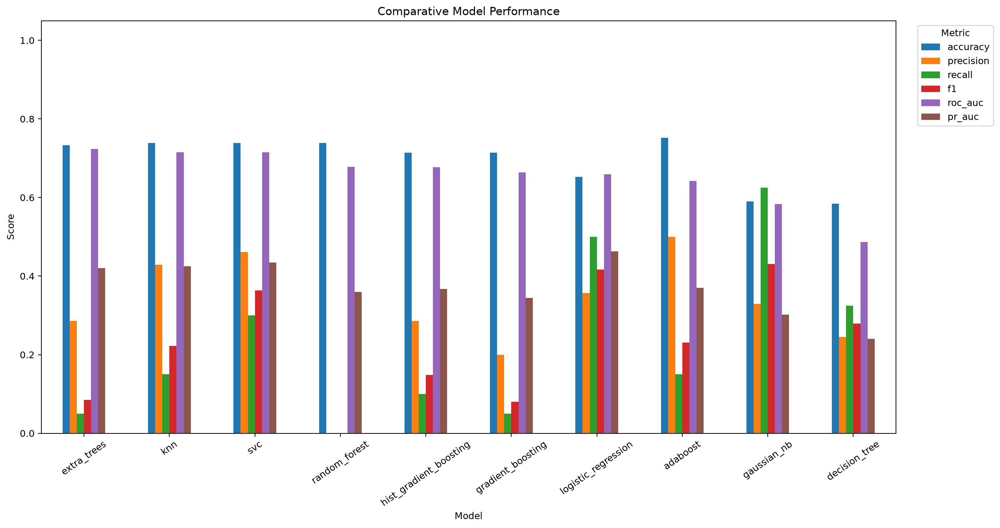
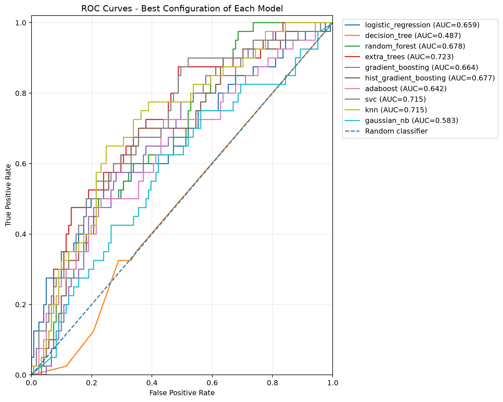
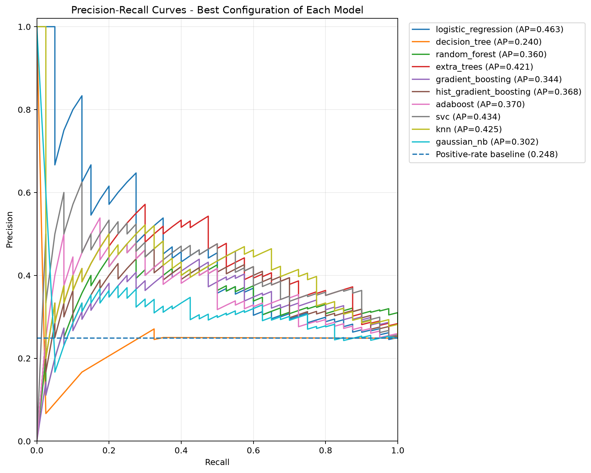
| model | config_id | parameters | cv_accuracy_mean | cv_accuracy_std | cv_precision_mean | cv_precision_std | cv_recall_mean | cv_recall_std | cv_f1_mean | cv_f1_std | cv_roc_auc_mean | cv_roc_auc_std | cv_pr_auc_mean | cv_pr_auc_std | cv_balanced_accuracy_mean | cv_balanced_accuracy_std | cv_specificity_mean | cv_specificity_std |
|---|---|---|---|---|---|---|---|---|---|---|---|---|---|---|---|---|---|---|
| svc | 3 | {"C": 2.0, "break_ties": false, "cache_size": 200, "class_weight": "balanced", "coef0": 0.0, "decision_function_shape": "ovr", "degree": 3, "gamma": "scale", "kernel": "rbf", "max_iter": -1, "probability": true, "random_state": 42, "shrinking": true, "tol": 0.001, "verbose": false} | 0.7777 | 0.0433 | 0.5757 | 0.1351 | 0.3622 | 0.1089 | 0.4434 | 0.1199 | 0.7683 | 0.0427 | 0.5591 | 0.0870 | 0.6384 | 0.0647 | 0.9145 | 0.0245 |
| svc | 2 | {"C": 1.0, "break_ties": false, "cache_size": 200, "class_weight": "balanced", "coef0": 0.0, "decision_function_shape": "ovr", "degree": 3, "gamma": "scale", "kernel": "rbf", "max_iter": -1, "probability": true, "random_state": 42, "shrinking": true, "tol": 0.001, "verbose": false} | 0.7603 | 0.0289 | 0.5177 | 0.0646 | 0.4757 | 0.0757 | 0.4945 | 0.0661 | 0.7657 | 0.0422 | 0.5347 | 0.0806 | 0.6649 | 0.0423 | 0.8540 | 0.0233 |
| extra_trees | 3 | {"bootstrap": false, "ccp_alpha": 0.0, "class_weight": "balanced", "criterion": "gini", "max_depth": 20, "max_features": "sqrt", "max_leaf_nodes": null, "max_samples": null, "min_impurity_decrease": 0.0, "min_samples_leaf": 3, "min_samples_split": 2, "min_weight_fraction_leaf": 0.0, "monotonic_cst": null, "n_estimators": 500, "n_jobs": -1, "oob_score": false, "random_state": 42, "verbose": 0, "warm_start": false} | 0.7617 | 0.0116 | 0.6800 | 0.2112 | 0.0757 | 0.0202 | 0.1361 | 0.0370 | 0.7588 | 0.0407 | 0.5227 | 0.0494 | 0.5316 | 0.0145 | 0.9875 | 0.0091 |
| extra_trees | 2 | {"bootstrap": false, "ccp_alpha": 0.0, "class_weight": "balanced", "criterion": "gini", "max_depth": null, "max_features": "sqrt", "max_leaf_nodes": null, "max_samples": null, "min_impurity_decrease": 0.0, "min_samples_leaf": 2, "min_samples_split": 2, "min_weight_fraction_leaf": 0.0, "monotonic_cst": null, "n_estimators": 350, "n_jobs": -1, "oob_score": false, "random_state": 42, "verbose": 0, "warm_start": false} | 0.7564 | 0.0049 | 0.7000 | 0.2449 | 0.0378 | 0.0132 | 0.0711 | 0.0237 | 0.7579 | 0.0295 | 0.5139 | 0.0476 | 0.5154 | 0.0067 | 0.9929 | 0.0067 |
| svc | 1 | {"C": 0.5, "break_ties": false, "cache_size": 200, "class_weight": "balanced", "coef0": 0.0, "decision_function_shape": "ovr", "degree": 3, "gamma": "scale", "kernel": "rbf", "max_iter": -1, "probability": true, "random_state": 42, "shrinking": true, "tol": 0.001, "verbose": false} | 0.7229 | 0.0186 | 0.4551 | 0.0274 | 0.6216 | 0.0855 | 0.5242 | 0.0470 | 0.7509 | 0.0428 | 0.5036 | 0.0755 | 0.6889 | 0.0380 | 0.7562 | 0.0219 |
| random_forest | 2 | {"bootstrap": true, "ccp_alpha": 0.0, "class_weight": "balanced_subsample", "criterion": "gini", "max_depth": null, "max_features": "sqrt", "max_leaf_nodes": null, "max_samples": null, "min_impurity_decrease": 0.0, "min_samples_leaf": 2, "min_samples_split": 2, "min_weight_fraction_leaf": 0.0, "monotonic_cst": null, "n_estimators": 350, "n_jobs": -1, "oob_score": false, "random_state": 42, "verbose": 0, "warm_start": false} | 0.7510 | 0.0043 | 0.2000 | 0.4000 | 0.0054 | 0.0108 | 0.0105 | 0.0211 | 0.7491 | 0.0470 | 0.5122 | 0.0734 | 0.5009 | 0.0066 | 0.9965 | 0.0043 |
| random_forest | 3 | {"bootstrap": true, "ccp_alpha": 0.0, "class_weight": "balanced_subsample", "criterion": "gini", "max_depth": 20, "max_features": "sqrt", "max_leaf_nodes": null, "max_samples": null, "min_impurity_decrease": 0.0, "min_samples_leaf": 3, "min_samples_split": 2, "min_weight_fraction_leaf": 0.0, "monotonic_cst": null, "n_estimators": 500, "n_jobs": -1, "oob_score": false, "random_state": 42, "verbose": 0, "warm_start": false} | 0.7564 | 0.0086 | 0.5000 | 0.4472 | 0.0270 | 0.0296 | 0.0508 | 0.0548 | 0.7451 | 0.0416 | 0.5102 | 0.0749 | 0.5117 | 0.0157 | 0.9965 | 0.0043 |
| random_forest | 1 | {"bootstrap": true, "ccp_alpha": 0.0, "class_weight": "balanced_subsample", "criterion": "gini", "max_depth": null, "max_features": "sqrt", "max_leaf_nodes": null, "max_samples": null, "min_impurity_decrease": 0.0, "min_samples_leaf": 1, "min_samples_split": 2, "min_weight_fraction_leaf": 0.0, "monotonic_cst": null, "n_estimators": 200, "n_jobs": -1, "oob_score": false, "random_state": 42, "verbose": 0, "warm_start": false} | 0.7523 | 0.0008 | 0.0000 | 0.0000 | 0.0000 | 0.0000 | 0.0000 | 0.0000 | 0.7388 | 0.0552 | 0.4848 | 0.0921 | 0.5000 | 0.0000 | 1.0000 | 0.0000 |
| extra_trees | 1 | {"bootstrap": false, "ccp_alpha": 0.0, "class_weight": "balanced", "criterion": "gini", "max_depth": null, "max_features": "sqrt", "max_leaf_nodes": null, "max_samples": null, "min_impurity_decrease": 0.0, "min_samples_leaf": 1, "min_samples_split": 2, "min_weight_fraction_leaf": 0.0, "monotonic_cst": null, "n_estimators": 200, "n_jobs": -1, "oob_score": false, "random_state": 42, "verbose": 0, "warm_start": false} | 0.7550 | 0.0046 | 0.5333 | 0.4522 | 0.0216 | 0.0202 | 0.0411 | 0.0377 | 0.7384 | 0.0417 | 0.5043 | 0.0627 | 0.5090 | 0.0099 | 0.9964 | 0.0044 |
| hist_gradient_boosting | 2 | {"categorical_features": "from_dtype", "class_weight": null, "early_stopping": "auto", "interaction_cst": null, "l2_regularization": 0.0, "learning_rate": 0.08, "loss": "log_loss", "max_bins": 255, "max_depth": null, "max_features": 1.0, "max_iter": 200, "max_leaf_nodes": 31, "min_samples_leaf": 20, "monotonic_cst": null, "n_iter_no_change": 10, "random_state": 42, "scoring": "loss", "tol": 1e-07, "validation_fraction": 0.1, "verbose": 0, "warm_start": false} | 0.7671 | 0.0191 | 0.5872 | 0.1116 | 0.1784 | 0.0582 | 0.2724 | 0.0806 | 0.7377 | 0.0421 | 0.4956 | 0.0571 | 0.5696 | 0.0319 | 0.9609 | 0.0091 |
| knn | 2 | {"algorithm": "auto", "leaf_size": 30, "metric": "minkowski", "metric_params": null, "n_jobs": -1, "n_neighbors": 15, "p": 2, "weights": "distance"} | 0.7671 | 0.0262 | 0.5738 | 0.1881 | 0.1784 | 0.0830 | 0.2691 | 0.1170 | 0.7375 | 0.0399 | 0.5094 | 0.0773 | 0.5696 | 0.0444 | 0.9609 | 0.0145 |
| knn | 1 | {"algorithm": "auto", "leaf_size": 30, "metric": "minkowski", "metric_params": null, "n_jobs": -1, "n_neighbors": 7, "p": 2, "weights": "distance"} | 0.7631 | 0.0219 | 0.5511 | 0.0942 | 0.2703 | 0.0684 | 0.3576 | 0.0725 | 0.7335 | 0.0534 | 0.5345 | 0.0754 | 0.5978 | 0.0331 | 0.9253 | 0.0255 |
| hist_gradient_boosting | 1 | {"categorical_features": "from_dtype", "class_weight": null, "early_stopping": "auto", "interaction_cst": null, "l2_regularization": 0.0, "learning_rate": 0.05, "loss": "log_loss", "max_bins": 255, "max_depth": null, "max_features": 1.0, "max_iter": 150, "max_leaf_nodes": 15, "min_samples_leaf": 20, "monotonic_cst": null, "n_iter_no_change": 10, "random_state": 42, "scoring": "loss", "tol": 1e-07, "validation_fraction": 0.1, "verbose": 0, "warm_start": false} | 0.7496 | 0.0167 | 0.4491 | 0.1276 | 0.1459 | 0.0717 | 0.2168 | 0.0994 | 0.7193 | 0.0438 | 0.4546 | 0.0536 | 0.5472 | 0.0326 | 0.9484 | 0.0173 |
| knn | 3 | {"algorithm": "auto", "leaf_size": 30, "metric": "minkowski", "metric_params": null, "n_jobs": -1, "n_neighbors": 25, "p": 2, "weights": "distance"} | 0.7684 | 0.0162 | 0.7800 | 0.2267 | 0.0973 | 0.0501 | 0.1691 | 0.0842 | 0.7191 | 0.0334 | 0.4968 | 0.0764 | 0.5433 | 0.0268 | 0.9893 | 0.0104 |
| hist_gradient_boosting | 3 | {"categorical_features": "from_dtype", "class_weight": null, "early_stopping": "auto", "interaction_cst": null, "l2_regularization": 0.0, "learning_rate": 0.03, "loss": "log_loss", "max_bins": 255, "max_depth": null, "max_features": 1.0, "max_iter": 300, "max_leaf_nodes": 31, "min_samples_leaf": 20, "monotonic_cst": null, "n_iter_no_change": 10, "random_state": 42, "scoring": "loss", "tol": 1e-07, "validation_fraction": 0.1, "verbose": 0, "warm_start": false} | 0.7577 | 0.0106 | 0.5312 | 0.0822 | 0.1459 | 0.0501 | 0.2265 | 0.0669 | 0.7140 | 0.0433 | 0.4607 | 0.0625 | 0.5525 | 0.0231 | 0.9591 | 0.0090 |
| logistic_regression | 1 | {"C": 0.5, "class_weight": "balanced", "dual": false, "fit_intercept": true, "intercept_scaling": 1, "l1_ratio": 0.0, "max_iter": 3000, "n_jobs": null, "penalty": "deprecated", "random_state": 42, "solver": "lbfgs", "tol": 0.0001, "verbose": 0, "warm_start": false} | 0.6747 | 0.0176 | 0.3810 | 0.0262 | 0.5027 | 0.0471 | 0.4331 | 0.0333 | 0.6910 | 0.0294 | 0.4657 | 0.0471 | 0.6170 | 0.0252 | 0.7314 | 0.0175 |
| logistic_regression | 2 | {"C": 1.0, "class_weight": "balanced", "dual": false, "fit_intercept": true, "intercept_scaling": 1, "l1_ratio": 0.0, "max_iter": 3000, "n_jobs": null, "penalty": "deprecated", "random_state": 42, "solver": "lbfgs", "tol": 0.0001, "verbose": 0, "warm_start": false} | 0.6787 | 0.0246 | 0.3863 | 0.0349 | 0.5027 | 0.0501 | 0.4365 | 0.0398 | 0.6871 | 0.0296 | 0.4623 | 0.0488 | 0.6197 | 0.0307 | 0.7367 | 0.0242 |
| logistic_regression | 3 | {"C": 2.0, "class_weight": "balanced", "dual": false, "fit_intercept": true, "intercept_scaling": 1, "l1_ratio": 0.0, "max_iter": 3000, "n_jobs": null, "penalty": "deprecated", "random_state": 42, "solver": "lbfgs", "tol": 0.0001, "verbose": 0, "warm_start": false} | 0.6787 | 0.0253 | 0.3865 | 0.0358 | 0.5027 | 0.0501 | 0.4366 | 0.0401 | 0.6833 | 0.0289 | 0.4593 | 0.0499 | 0.6197 | 0.0309 | 0.7367 | 0.0253 |
| adaboost | 2 | {"estimator": null, "learning_rate": 0.5, "n_estimators": 200, "random_state": 42} | 0.7537 | 0.0236 | 0.4856 | 0.1929 | 0.1730 | 0.0757 | 0.2529 | 0.1062 | 0.6817 | 0.0444 | 0.4433 | 0.0639 | 0.5589 | 0.0393 | 0.9448 | 0.0172 |
| gradient_boosting | 3 | {"ccp_alpha": 0.0, "criterion": "deprecated", "init": null, "learning_rate": 0.03, "loss": "log_loss", "max_depth": 3, "max_features": null, "max_leaf_nodes": null, "min_impurity_decrease": 0.0, "min_samples_leaf": 1, "min_samples_split": 2, "min_weight_fraction_leaf": 0.0, "n_estimators": 200, "n_iter_no_change": null, "random_state": 42, "subsample": 1.0, "tol": 0.0001, "validation_fraction": 0.1, "verbose": 0, "warm_start": false} | 0.7576 | 0.0308 | 0.4977 | 0.2545 | 0.1243 | 0.0848 | 0.1974 | 0.1284 | 0.6800 | 0.0558 | 0.4414 | 0.0834 | 0.5453 | 0.0482 | 0.9662 | 0.0153 |
| gradient_boosting | 2 | {"ccp_alpha": 0.0, "criterion": "deprecated", "init": null, "learning_rate": 0.05, "loss": "log_loss", "max_depth": 3, "max_features": null, "max_leaf_nodes": null, "min_impurity_decrease": 0.0, "min_samples_leaf": 1, "min_samples_split": 2, "min_weight_fraction_leaf": 0.0, "n_estimators": 150, "n_iter_no_change": null, "random_state": 42, "subsample": 1.0, "tol": 0.0001, "validation_fraction": 0.1, "verbose": 0, "warm_start": false} | 0.7590 | 0.0302 | 0.5502 | 0.2085 | 0.1459 | 0.0653 | 0.2297 | 0.0988 | 0.6798 | 0.0585 | 0.4390 | 0.0792 | 0.5534 | 0.0412 | 0.9608 | 0.0207 |
| adaboost | 3 | {"estimator": null, "learning_rate": 0.3, "n_estimators": 300, "random_state": 42} | 0.7510 | 0.0145 | 0.5385 | 0.1747 | 0.0865 | 0.0315 | 0.1451 | 0.0459 | 0.6745 | 0.0387 | 0.4158 | 0.0480 | 0.5281 | 0.0155 | 0.9698 | 0.0200 |
| gradient_boosting | 1 | {"ccp_alpha": 0.0, "criterion": "deprecated", "init": null, "learning_rate": 0.05, "loss": "log_loss", "max_depth": 2, "max_features": null, "max_leaf_nodes": null, "min_impurity_decrease": 0.0, "min_samples_leaf": 1, "min_samples_split": 2, "min_weight_fraction_leaf": 0.0, "n_estimators": 100, "n_iter_no_change": null, "random_state": 42, "subsample": 1.0, "tol": 0.0001, "validation_fraction": 0.1, "verbose": 0, "warm_start": false} | 0.7510 | 0.0221 | 0.5107 | 0.2218 | 0.0919 | 0.0367 | 0.1546 | 0.0625 | 0.6732 | 0.0570 | 0.4321 | 0.0773 | 0.5299 | 0.0254 | 0.9680 | 0.0214 |
| adaboost | 1 | {"estimator": null, "learning_rate": 0.5, "n_estimators": 100, "random_state": 42} | 0.7457 | 0.0126 | 0.4637 | 0.1241 | 0.1189 | 0.0439 | 0.1845 | 0.0547 | 0.6605 | 0.0488 | 0.4143 | 0.0584 | 0.5355 | 0.0161 | 0.9520 | 0.0235 |
| gaussian_nb | 3 | {"priors": null, "var_smoothing": 1e-07} | 0.4939 | 0.1625 | 0.3183 | 0.0647 | 0.7189 | 0.2252 | 0.4138 | 0.0070 | 0.6547 | 0.0226 | 0.3592 | 0.0194 | 0.5693 | 0.0333 | 0.4198 | 0.2901 |
| gaussian_nb | 2 | {"priors": null, "var_smoothing": 1e-08} | 0.4805 | 0.1706 | 0.3100 | 0.0612 | 0.7081 | 0.2408 | 0.4014 | 0.0180 | 0.6517 | 0.0255 | 0.3511 | 0.0186 | 0.5568 | 0.0356 | 0.4055 | 0.3054 |
| gaussian_nb | 1 | {"priors": null, "var_smoothing": 1e-09} | 0.4684 | 0.1805 | 0.3051 | 0.0622 | 0.7027 | 0.2489 | 0.3933 | 0.0230 | 0.6411 | 0.0288 | 0.3365 | 0.0224 | 0.5470 | 0.0398 | 0.3913 | 0.3212 |
| decision_tree | 2 | {"ccp_alpha": 0.0, "class_weight": "balanced", "criterion": "gini", "max_depth": 10, "max_features": null, "max_leaf_nodes": null, "min_impurity_decrease": 0.0, "min_samples_leaf": 3, "min_samples_split": 2, "min_weight_fraction_leaf": 0.0, "monotonic_cst": null, "random_state": 42, "splitter": "best"} | 0.6385 | 0.0252 | 0.3255 | 0.0514 | 0.4595 | 0.1557 | 0.3783 | 0.0859 | 0.5807 | 0.0643 | 0.2949 | 0.0423 | 0.5785 | 0.0672 | 0.6976 | 0.0280 |
| decision_tree | 3 | {"ccp_alpha": 0.0, "class_weight": "balanced", "criterion": "gini", "max_depth": null, "max_features": null, "max_leaf_nodes": null, "min_impurity_decrease": 0.0, "min_samples_leaf": 5, "min_samples_split": 2, "min_weight_fraction_leaf": 0.0, "monotonic_cst": null, "random_state": 42, "splitter": "best"} | 0.6398 | 0.0456 | 0.3132 | 0.0684 | 0.3784 | 0.0888 | 0.3420 | 0.0757 | 0.5693 | 0.0625 | 0.3046 | 0.0544 | 0.5521 | 0.0568 | 0.7259 | 0.0412 |
| decision_tree | 1 | {"ccp_alpha": 0.0, "class_weight": "balanced", "criterion": "gini", "max_depth": 6, "max_features": null, "max_leaf_nodes": null, "min_impurity_decrease": 0.0, "min_samples_leaf": 2, "min_samples_split": 2, "min_weight_fraction_leaf": 0.0, "monotonic_cst": null, "random_state": 42, "splitter": "best"} | 0.5970 | 0.0180 | 0.2998 | 0.0398 | 0.4865 | 0.1244 | 0.3694 | 0.0646 | 0.5574 | 0.0320 | 0.2839 | 0.0252 | 0.5600 | 0.0501 | 0.6335 | 0.0320 |
Selected configuration: 1
Hyperparameters:
{"C": 0.5, "class_weight": "balanced", "dual": false, "fit_intercept": true, "intercept_scaling": 1, "l1_ratio": 0.0, "max_iter": 3000, "n_jobs": null, "penalty": "deprecated", "random_state": 42, "solver": "lbfgs", "tol": 0.0001, "verbose": 0, "warm_start": false}
| Metric | Value |
|---|---|
| Accuracy | 0.6522 |
| Precision | 0.3571 |
| Recall | 0.5000 |
| F1 | 0.4167 |
| Roc Auc | 0.6591 |
| Pr Auc | 0.4634 |
| Balanced Accuracy | 0.6012 |
| Specificity | 0.7025 |
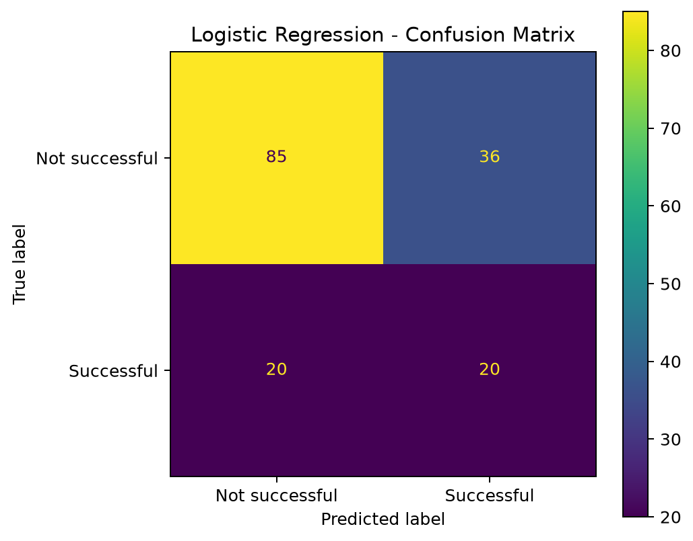
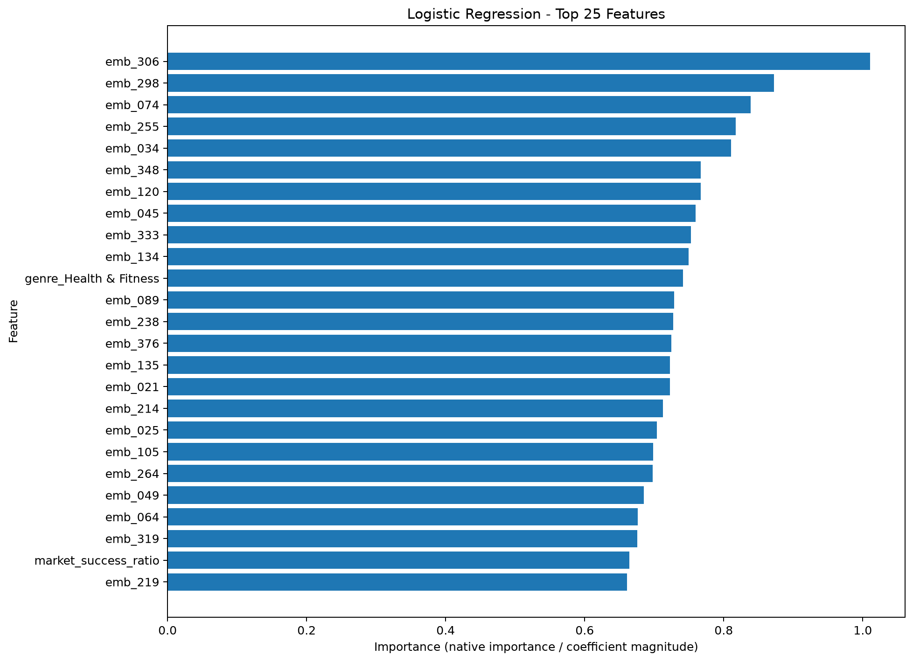
Selected configuration: 2
Hyperparameters:
{"ccp_alpha": 0.0, "class_weight": "balanced", "criterion": "gini", "max_depth": 10, "max_features": null, "max_leaf_nodes": null, "min_impurity_decrease": 0.0, "min_samples_leaf": 3, "min_samples_split": 2, "min_weight_fraction_leaf": 0.0, "monotonic_cst": null, "random_state": 42, "splitter": "best"}
| Metric | Value |
|---|---|
| Accuracy | 0.5839 |
| Precision | 0.2453 |
| Recall | 0.3250 |
| F1 | 0.2796 |
| Roc Auc | 0.4866 |
| Pr Auc | 0.2402 |
| Balanced Accuracy | 0.4972 |
| Specificity | 0.6694 |
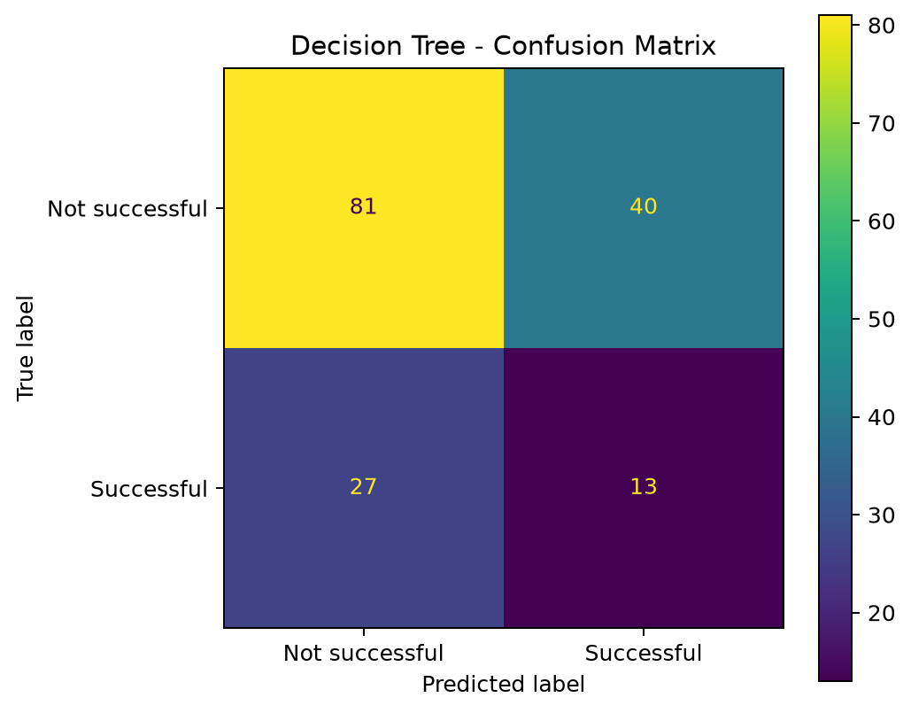
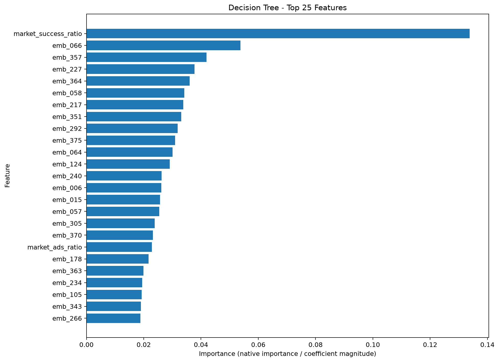
Selected configuration: 2
Hyperparameters:
{"bootstrap": true, "ccp_alpha": 0.0, "class_weight": "balanced_subsample", "criterion": "gini", "max_depth": null, "max_features": "sqrt", "max_leaf_nodes": null, "max_samples": null, "min_impurity_decrease": 0.0, "min_samples_leaf": 2, "min_samples_split": 2, "min_weight_fraction_leaf": 0.0, "monotonic_cst": null, "n_estimators": 350, "n_jobs": -1, "oob_score": false, "random_state": 42, "verbose": 0, "warm_start": false}
| Metric | Value |
|---|---|
| Accuracy | 0.7391 |
| Precision | 0.0000 |
| Recall | 0.0000 |
| F1 | 0.0000 |
| Roc Auc | 0.6781 |
| Pr Auc | 0.3601 |
| Balanced Accuracy | 0.4917 |
| Specificity | 0.9835 |
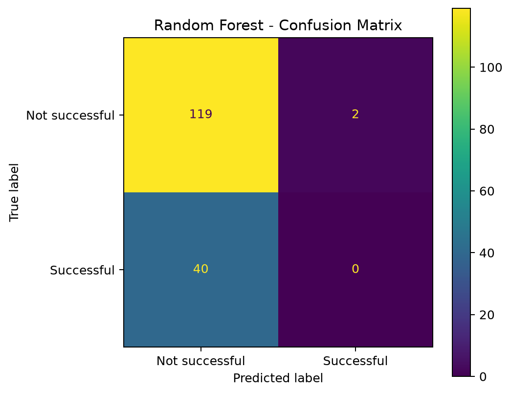
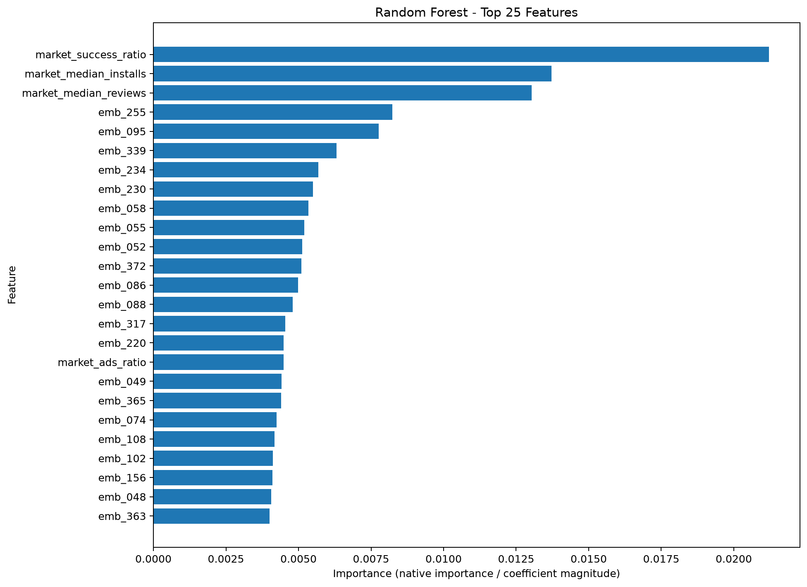
Selected configuration: 3
Hyperparameters:
{"bootstrap": false, "ccp_alpha": 0.0, "class_weight": "balanced", "criterion": "gini", "max_depth": 20, "max_features": "sqrt", "max_leaf_nodes": null, "max_samples": null, "min_impurity_decrease": 0.0, "min_samples_leaf": 3, "min_samples_split": 2, "min_weight_fraction_leaf": 0.0, "monotonic_cst": null, "n_estimators": 500, "n_jobs": -1, "oob_score": false, "random_state": 42, "verbose": 0, "warm_start": false}
| Metric | Value |
|---|---|
| Accuracy | 0.7329 |
| Precision | 0.2857 |
| Recall | 0.0500 |
| F1 | 0.0851 |
| Roc Auc | 0.7231 |
| Pr Auc | 0.4205 |
| Balanced Accuracy | 0.5043 |
| Specificity | 0.9587 |
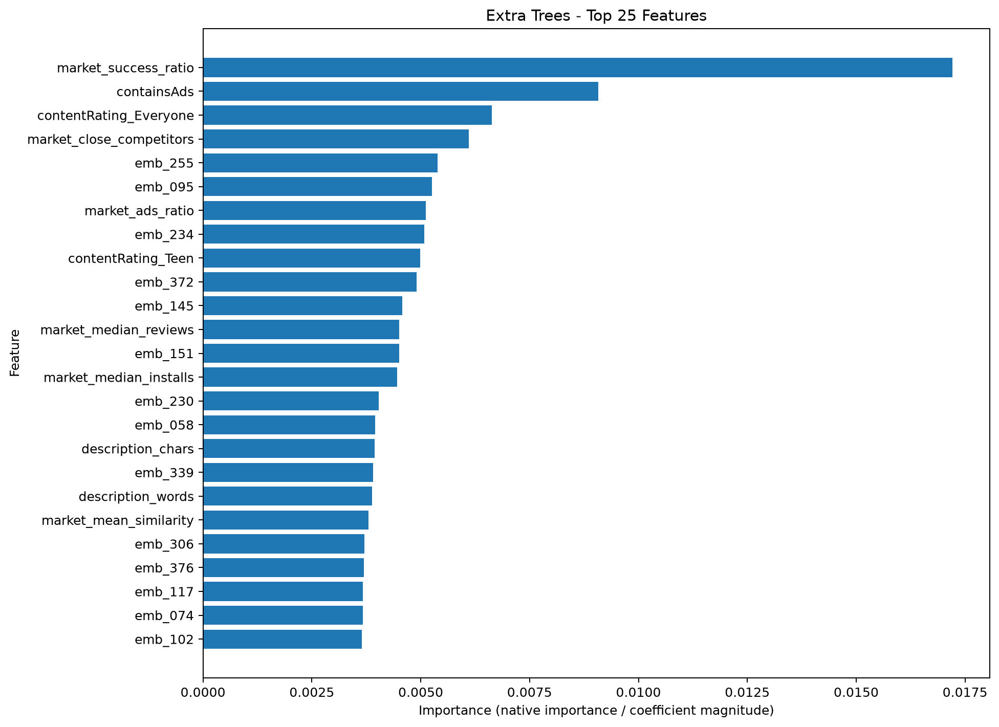
Selected configuration: 3
Hyperparameters:
{"ccp_alpha": 0.0, "criterion": "deprecated", "init": null, "learning_rate": 0.03, "loss": "log_loss", "max_depth": 3, "max_features": null, "max_leaf_nodes": null, "min_impurity_decrease": 0.0, "min_samples_leaf": 1, "min_samples_split": 2, "min_weight_fraction_leaf": 0.0, "n_estimators": 200, "n_iter_no_change": null, "random_state": 42, "subsample": 1.0, "tol": 0.0001, "validation_fraction": 0.1, "verbose": 0, "warm_start": false}
| Metric | Value |
|---|---|
| Accuracy | 0.7143 |
| Precision | 0.2000 |
| Recall | 0.0500 |
| F1 | 0.0800 |
| Roc Auc | 0.6643 |
| Pr Auc | 0.3442 |
| Balanced Accuracy | 0.4919 |
| Specificity | 0.9339 |
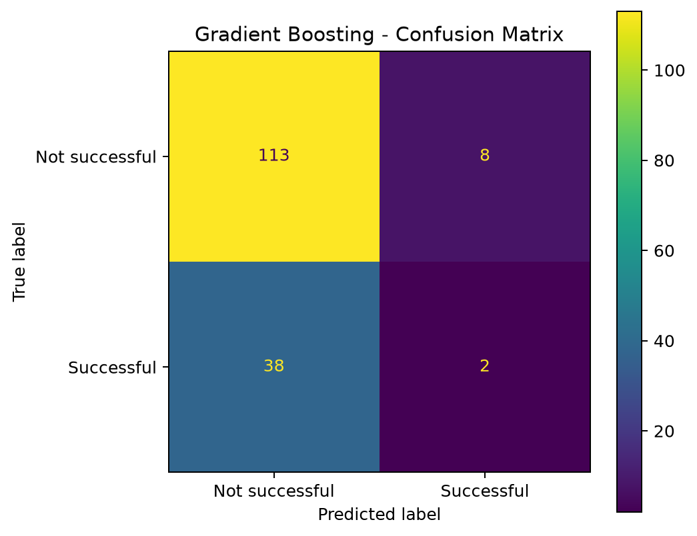
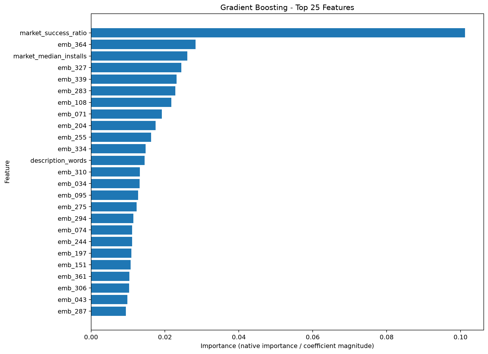
Selected configuration: 2
Hyperparameters:
{"categorical_features": "from_dtype", "class_weight": null, "early_stopping": "auto", "interaction_cst": null, "l2_regularization": 0.0, "learning_rate": 0.08, "loss": "log_loss", "max_bins": 255, "max_depth": null, "max_features": 1.0, "max_iter": 200, "max_leaf_nodes": 31, "min_samples_leaf": 20, "monotonic_cst": null, "n_iter_no_change": 10, "random_state": 42, "scoring": "loss", "tol": 1e-07, "validation_fraction": 0.1, "verbose": 0, "warm_start": false}
| Metric | Value |
|---|---|
| Accuracy | 0.7143 |
| Precision | 0.2857 |
| Recall | 0.1000 |
| F1 | 0.1481 |
| Roc Auc | 0.6769 |
| Pr Auc | 0.3676 |
| Balanced Accuracy | 0.5087 |
| Specificity | 0.9174 |
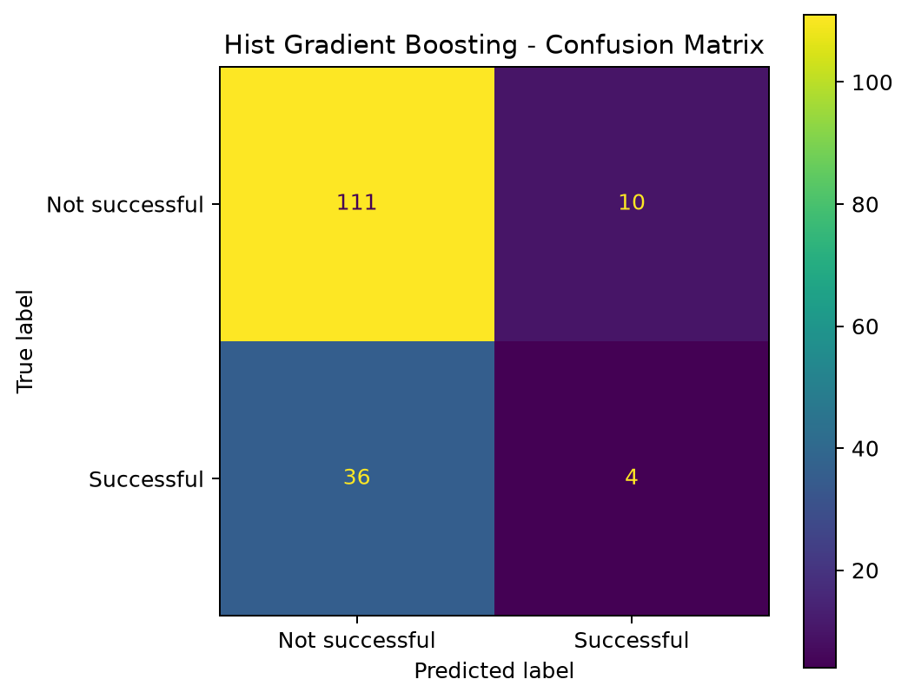
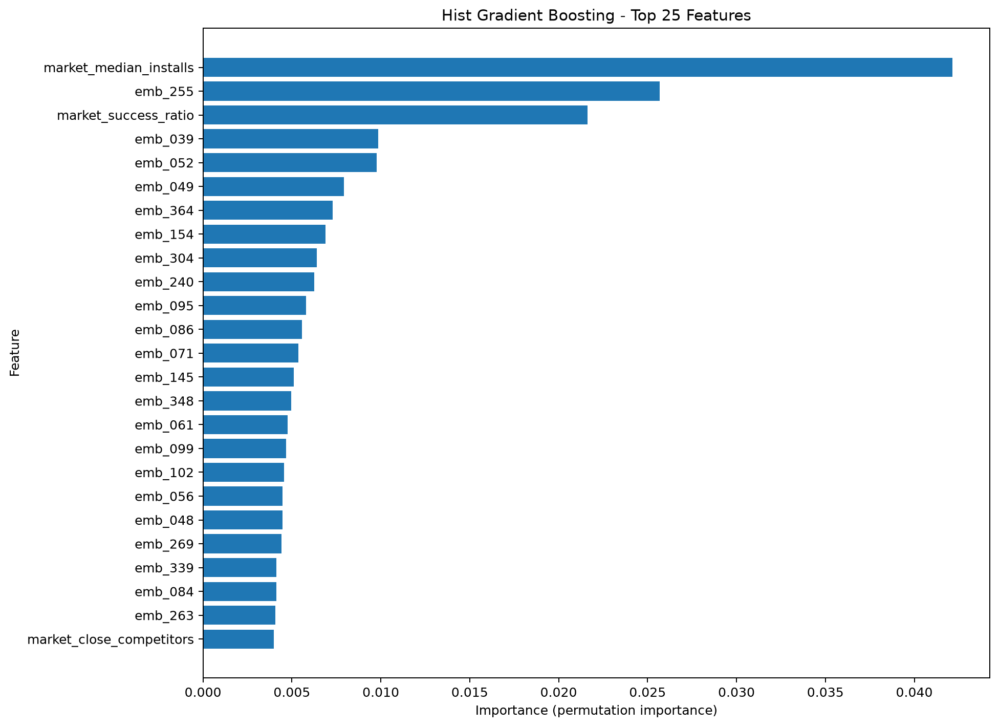
Selected configuration: 2
Hyperparameters:
{"estimator": null, "learning_rate": 0.5, "n_estimators": 200, "random_state": 42}
| Metric | Value |
|---|---|
| Accuracy | 0.7516 |
| Precision | 0.5000 |
| Recall | 0.1500 |
| F1 | 0.2308 |
| Roc Auc | 0.6421 |
| Pr Auc | 0.3702 |
| Balanced Accuracy | 0.5502 |
| Specificity | 0.9504 |
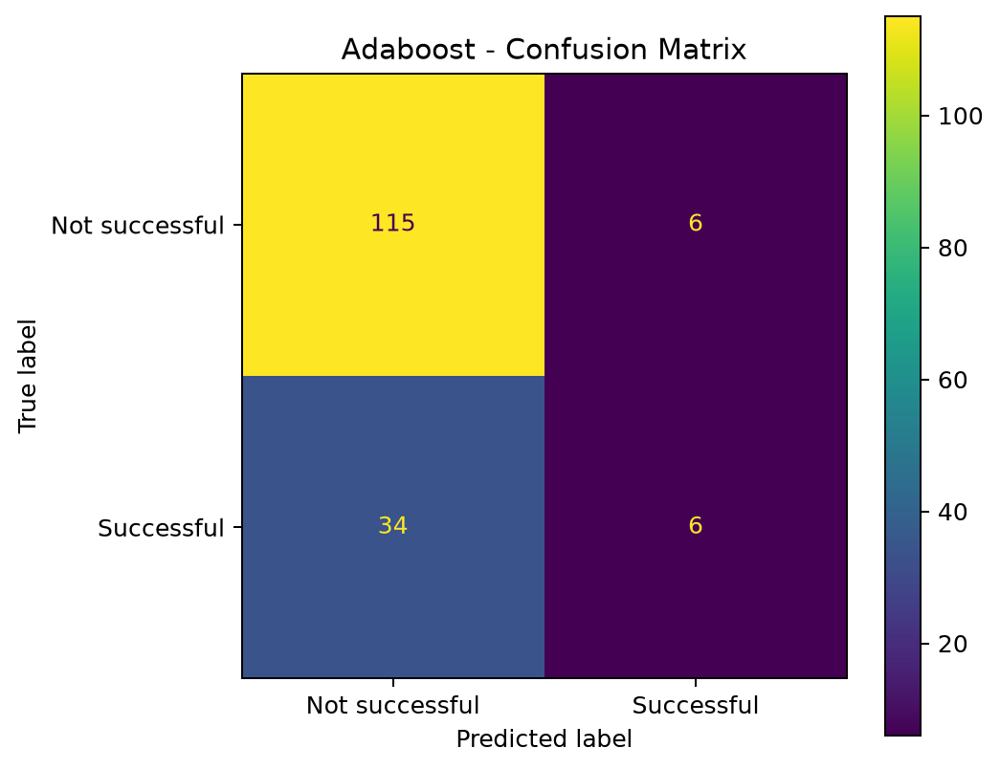
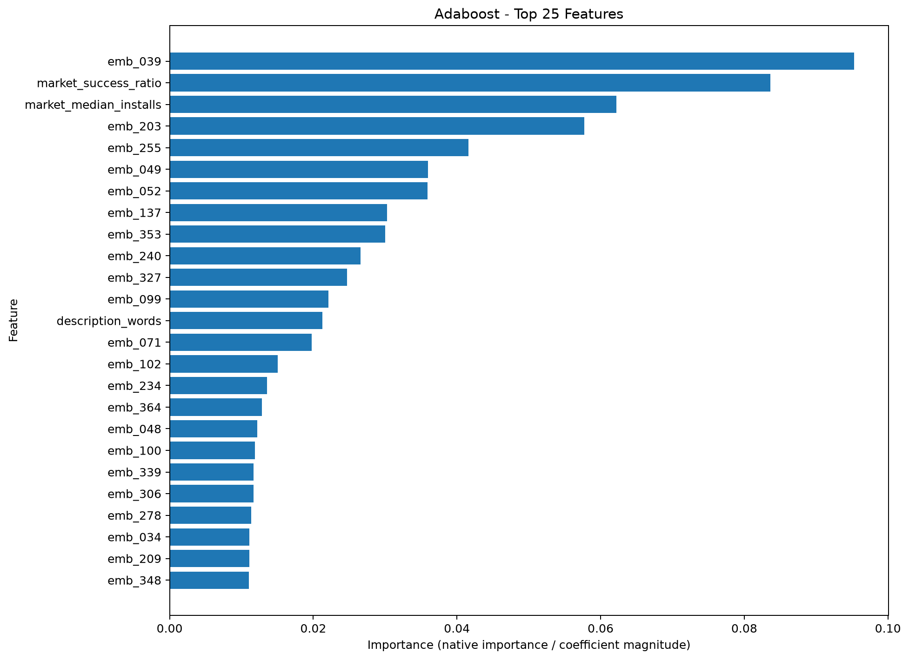
Selected configuration: 3
Hyperparameters:
{"C": 2.0, "break_ties": false, "cache_size": 200, "class_weight": "balanced", "coef0": 0.0, "decision_function_shape": "ovr", "degree": 3, "gamma": "scale", "kernel": "rbf", "max_iter": -1, "probability": true, "random_state": 42, "shrinking": true, "tol": 0.001, "verbose": false}
| Metric | Value |
|---|---|
| Accuracy | 0.7391 |
| Precision | 0.4615 |
| Recall | 0.3000 |
| F1 | 0.3636 |
| Roc Auc | 0.7149 |
| Pr Auc | 0.4342 |
| Balanced Accuracy | 0.5921 |
| Specificity | 0.8843 |
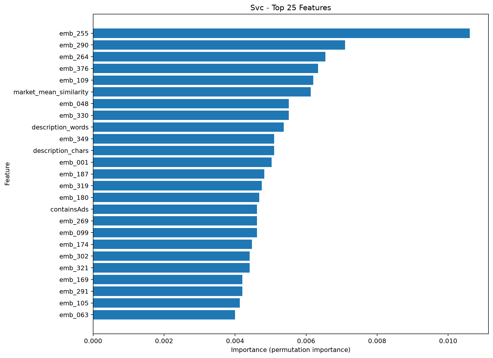
Selected configuration: 2
Hyperparameters:
{"algorithm": "auto", "leaf_size": 30, "metric": "minkowski", "metric_params": null, "n_jobs": -1, "n_neighbors": 15, "p": 2, "weights": "distance"}
| Metric | Value |
|---|---|
| Accuracy | 0.7391 |
| Precision | 0.4286 |
| Recall | 0.1500 |
| F1 | 0.2222 |
| Roc Auc | 0.7155 |
| Pr Auc | 0.4251 |
| Balanced Accuracy | 0.5419 |
| Specificity | 0.9339 |
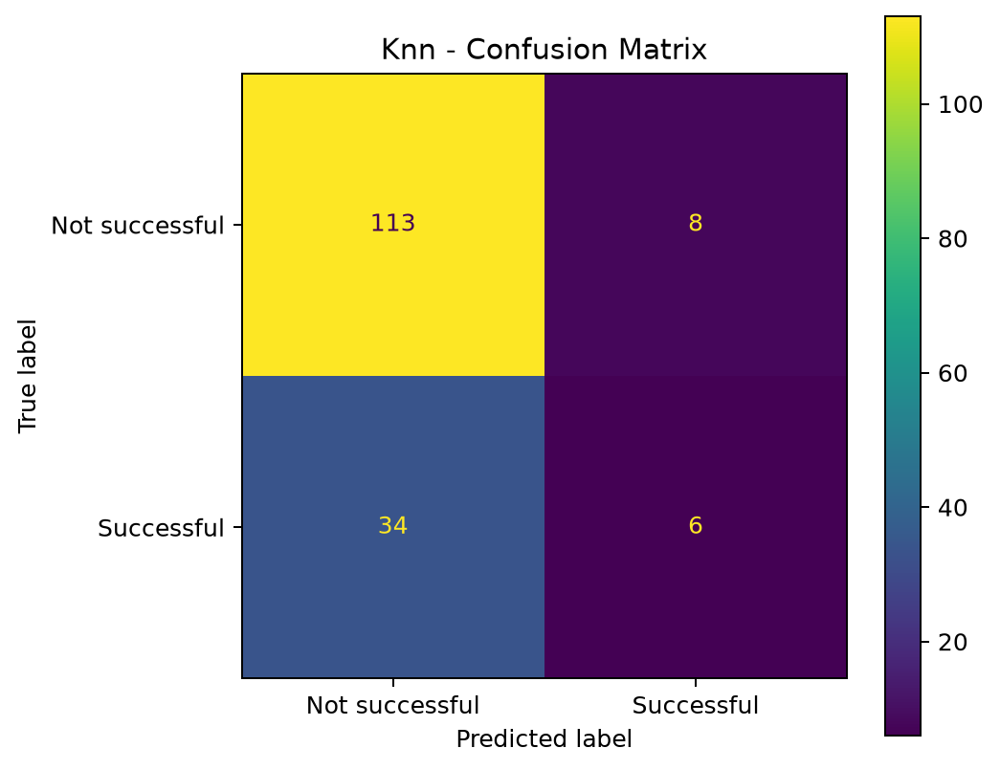
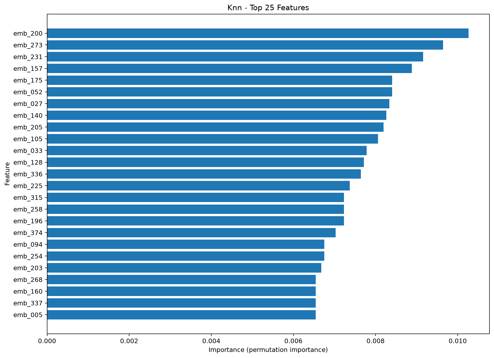
Selected configuration: 3
Hyperparameters:
{"priors": null, "var_smoothing": 1e-07}
| Metric | Value |
|---|---|
| Accuracy | 0.5901 |
| Precision | 0.3289 |
| Recall | 0.6250 |
| F1 | 0.4310 |
| Roc Auc | 0.5830 |
| Pr Auc | 0.3016 |
| Balanced Accuracy | 0.6018 |
| Specificity | 0.5785 |
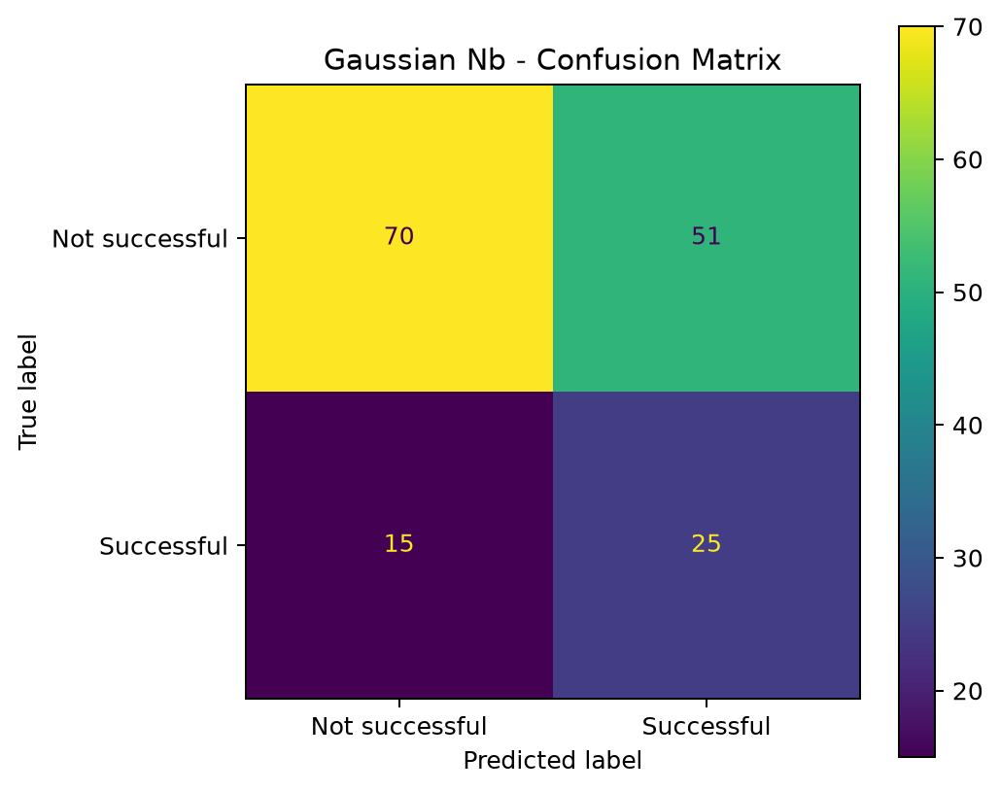
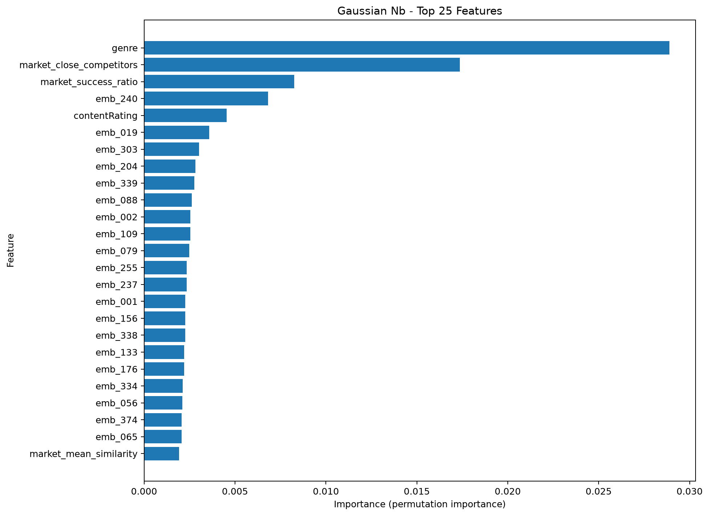
Model: Extra Trees
Configuration: 3
Hyperparameters:
{"bootstrap": false, "ccp_alpha": 0.0, "class_weight": "balanced", "criterion": "gini", "max_depth": 20, "max_features": "sqrt", "max_leaf_nodes": null, "max_samples": null, "min_impurity_decrease": 0.0, "min_samples_leaf": 3, "min_samples_split": 2, "min_weight_fraction_leaf": 0.0, "monotonic_cst": null, "n_estimators": 500, "n_jobs": -1, "oob_score": false, "random_state": 42, "verbose": 0, "warm_start": false}
| Metric | Value |
|---|---|
| Accuracy | 0.7391 |
| Precision | 0.4000 |
| Recall | 0.1000 |
| F1 | 0.1600 |
| Roc Auc | 0.7669 |
| Pr Auc | 0.5020 |
| Balanced Accuracy | 0.5252 |
| Specificity | 0.9504 |
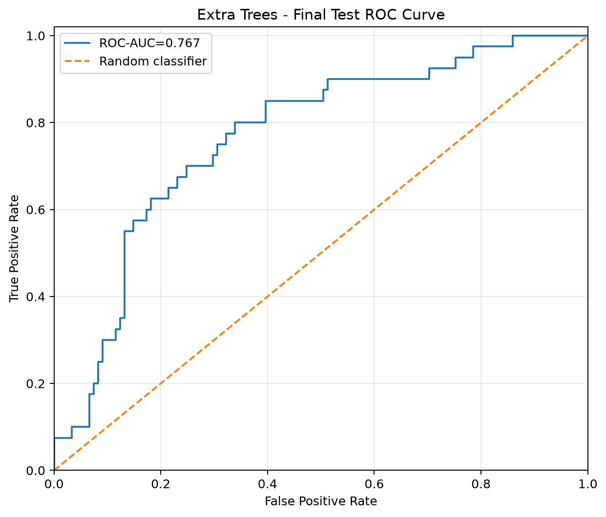
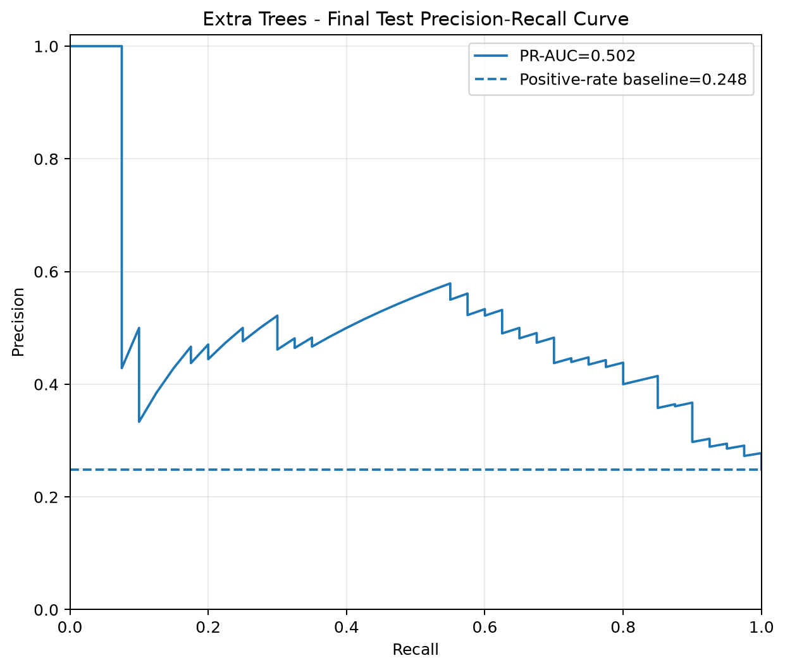
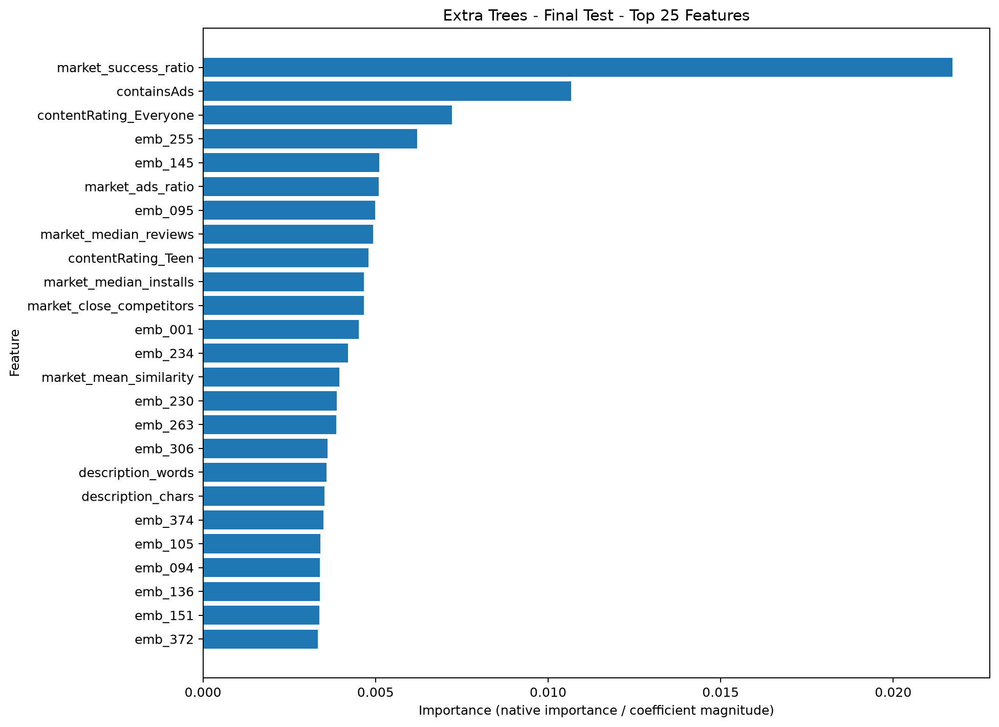